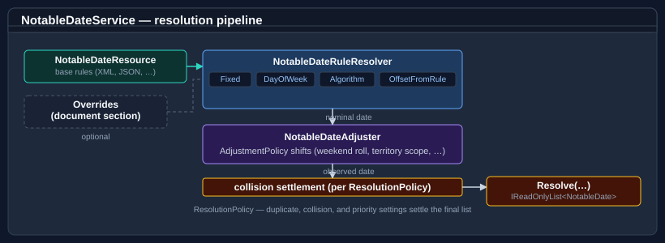
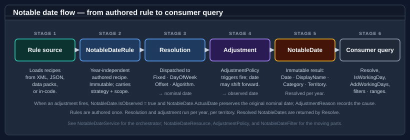

Bodu.Globalization.Calendar

Bodu.Globalization.Calendar resolves authored calendar rules into concrete notable dates such as public holidays, observances, religious festivals, and regional events. Consumers query dates by year, date, or range and territory, optionally filter by category, tag, or duration, and use the resolved dates for working-day-aware arithmetic. It anchors the Globalization & Calendars topic.
Rules are authored on the notable-date schema as XML or JSON, import from a set of bundled common catalogues, and load eagerly into an immutable, validated resource. More advanced scenarios extend the library with custom algorithms, adjustment handlers, collision resolvers, localizers, and trust-gated plugins.
Calendar package family
The calendar runtime is intentionally small. Region-specific holiday data and dependency-injection registration ship as separate companion packages so they can release on their own cadence without forcing a main-library rebuild.

| Package | Role |
|---|---|
Bodu.Globalization.Calendar |
The runtime — rule engine, resolution pipeline, working-day extensions. Required by every other calendar package. |
Bodu.Globalization.Calendar.Builder |
Fluent, chainable C# API for authoring notable-date documents in code, with XML / JSON serialization and load/save. See the builder guide. |
Bodu.Globalization.Calendar.DependencyInjection |
IServiceCollection extensions for registering INotableDateService over a loaded NotableDateResource. See the DI guide. |
Bodu.Globalization.Calendar.Plugins |
Trust-gated loading of external assemblies that contribute custom date-calculation algorithms. See Building and extending the service. |
Bodu.Globalization.Calendar.Americas |
Curated public-holiday rules for AR, BR, CA, CL, CO, MX, PE, US. |
Bodu.Globalization.Calendar.Europe |
Curated rules for 28 European territories including DE, ES, FR, GB, IT, NL. |
Bodu.Globalization.Calendar.AsiaPacific |
Curated rules for AU (with subdivisions), CN, HK, ID, IN, JP, KR, MY, NZ, PH, SG, TH, TW, VN. |
Bodu.Globalization.Calendar.Africa |
Curated rules for ZA, NG, KE, GH, ET, EG, MA. |
Bodu.Globalization.Calendar.MiddleEast |
Curated rules for AE, SA, IL, TR, QA, JO. |
The data packs are independent NuGet packages, so consumers pull in only the regions they need. See the Calendar data packs guide for per-pack install commands, territory coverage, and registration patterns.
Core mental model

A single notable date flows through the library in this order:

A rule document is authored text on the notable-date schema. NotableDateResourceLoader parses it, resolves its imports against the bundled common catalogues, applies any overrides, validates it, and produces an immutable NotableDateResource. A NotableDateService is built over that resource; for each requested year, date, or range it resolves every applicable rule using the rule's strategy (fixed date, nth weekday, weekday-near-date, offset from another rule, or a named algorithm), runs the referenced adjustment policies against the nominal date, settles same-day collisions, and emits the resolved NotableDate set. Consumers then query that set by territory, category, tag, or date range, or feed it into the working-day extensions.
Key concepts
| Concept | Plain-language meaning |
|---|---|
| Document / resource | The authored XML/JSON, and the immutable validated value it loads into. |
| Definition / rule | A notable-date concept, and one of its calculation recipes. |
| Resolution strategy | How a rule finds its nominal date — a fixed or positional date, a weekday-in-month rule, a reference to another rule, a working-day rule, or a named algorithm (13 single-date strategies), or one of the four frequency-based recurrence sources. See the strategy reference. |
| Adjustment policy | A reusable post-resolution shift that moves or substitutes the date — e.g. weekend rollover, substitute Monday — referenced by rules. |
| Territory | Geographic scope where the rule applies — AU for Australia, AU-NSW for New South Wales. |
| Category / tag | Classification used for filtering and display. NotableDateCategory is the well-known enum; tags are free-form strings. |
| Import | A pull from a bundled common catalogue, optionally re-scoped via <Use> directives. |
| Override | An ID-targeted add / patch / remove applied at load time; runtime change is a resource reload. |
| Resolved notable date | The concrete NotableDate returned to consumers — observed date, calculated date, name, category, territory, optional multi-day span. |
For the full glossary, see Core concepts.
Notable date vs. non-working day
Not every notable date is a non-working day. A rule can describe a public holiday, observance, remembrance day, religious festival, or regional event. Working-day operations use the occurrence's IsNonWorkingDay flag together with the configured working week (a Bodu.Core WeekPattern) to decide whether a date should be skipped.
Territory containment
Territory codes are hierarchical. A query for AU-NSW includes rules authored for AU as well as rules specific to AU-NSW, so national and regional rules compose naturally. The same applies to GB-ENG inheriting GB, US-CA inheriting US, and so on.
Worked example — New Year's Day in the US
A single rule traces the pipeline end-to-end:
global-coredefinesnew-years-dayas a<Fixed month="January" day="1" />rule,PublicHoliday, non-working.region-usimports it with<Use notableDateRef="new-years-day" territory="US">and attaches thesaturday-to-fridayandsunday-to-mondayadjustment policies.- The service resolves the fixed date for the requested year — the nominal
ActualDate. For 2028 that is2028-01-01, a Saturday. - The
saturday-to-fridaypolicy fires, so the emittedDateis the observed2027-12-31(Friday), withIsObserved == trueandAdjustmentPolicyId == "saturday-to-friday". - A query for territory
US-NYreturns the occurrence becauseUS-NYis contained byUS. - Working-day arithmetic —
someDate.AddWorkingDays(1, service, "US-NY")— skips the observed date because the rule is non-working.
The same flow applies to every other rule — only the strategy in step 3 and the adjustment outcome in step 4 differ.
Common scenarios
| Scenario | Reach for |
|---|---|
| Resolve all notable dates in a country for a year | service.Resolve(year, territory: "AU") |
| Resolve notable dates for a specific day or range | service.Resolve(new DateOnly(2026, 1, 26), "AU") / service.Resolve(new DateRange(from, to), "AU") |
| "Is today a public holiday in NSW?" | dateOnly.IsNotableDate(service, "AU-NSW", NotableDateFilter.ForCategory(NotableDateCategory.PublicHoliday)) |
| "Add 5 working days to today (skipping weekends and holidays)" | dateOnly.AddWorkingDays(5, service, "AU-NSW") |
| Author rules in XML / JSON and load them | NotableDateResourceLoader.Load(xml) / .LoadJson(json) |
| Author rules fluently in C# (and save to XML / JSON) | NotableDateDocumentBuilder — see the builder guide |
| Compute Easter / Diwali / Vesak for a year | author an <Algorithm key="western-easter"> (etc.) rule — see algorithms |
| Layer ID-targeted edits over imported concepts | a document <Overrides> block (<AddRule> / <PatchRule> / <RemoveRule>) |
| Swap the rule set on a live service | MutableNotableDateResourceProvider + ReloadableNotableDateService |
Register the service in an IServiceCollection-based host |
services.AddNotableDateService(resource) from Bodu.Globalization.Calendar.DependencyInjection |
| Enumerate the territories / calendar systems covered | service.GetSupportedTerritories() / service.GetSupportedCalendars() |
| Load algorithms from external assemblies safely | NotableDatePluginLoader + a trust policy |
| Apply observance adjustments (weekend → next working day) | an AdjustmentPolicy referenced by policyRef |
| Filter resolved notable dates by category, tag, or range | NotableDateFilter.ForCategory(...), .WithTag(...), .InDateRange(...) (combine with .And / .Or) |
Main types
The same surface, grouped by what role you're playing rather than by namespace.
Types most consumers use
| Type | Purpose |
|---|---|
| NotableDateService / INotableDateService | Main entry point — resolves and queries notable dates for a date, range, or year. |
| NotableDate | Resolved output — observed date, calculated date, name, category, territory, optional multi-day span. |
| NotableDateFilter | Composable predicate, built via static factory methods (ForCategory, WithTag, WithId, InDateRange, IsNonWorkingDay, …) and combined with And / Or / Not. |
| TerritoryCode | Strongly-typed ISO 3166 country / subdivision code with containment semantics. |
| NotableDateCategory | PublicHoliday / BankHoliday / Observance / Remembrance / Cultural / Religious / Seasonal / Civic / School / Regional / Other / None. |
| NotableDateOnlyExtensions, NotableDateTimeExtensions | Working-day arithmetic over DateOnly / DateTime — IsWorkingDay, NextWorkingDay, AddWorkingDays, WorkingDaysBetween, SnapToWorkingDay, … See Working-day arithmetic. |
Types used when authoring and loading rules
| Type | Purpose |
|---|---|
| NotableDateResourceLoader | Loads XML / JSON (string or Stream) into a validated NotableDateResource. |
| NotableDateDocumentBuilder | Fluent C# authoring of a document — builds, serializes (XML / JSON), and saves; from the Bodu.Globalization.Calendar.Builder companion. |
| NotableDateResource, NotableDateDefinition, NotableDateRule | The immutable loaded document: a resource of definitions, each with one or more rules. |
| CommonNotableDateResources | Resolver over the bundled common catalogues that documents import by name. |
| ResolutionPolicy | Resource-level duplicate / collision / observed-date policy and working week. |
| AdjustmentPolicy | A reusable, named adjustment referenced by rules. |
Built-in algorithms
The Bodu.Globalization.Calendar.Algorithms namespace resolves an <Algorithm key="…"> strategy to a bundled calculator. Common keys:
| Key | Computes |
|---|---|
western-easter, orthodox-easter |
Easter Sunday (Gregorian / Orthodox computus). |
vernal-equinox, autumnal-equinox, qingming |
Sun-longitude based dates. |
vesak, asalha-puja, losar |
Buddhist Vesak / Asalha Puja and Tibetan New Year. |
matariki |
New Zealand Matariki (gazetted table). |
diwali, holi, maha-shivaratri, … |
Hindu lunisolar festivals. |
Beneath the <Algorithm key="…"> keys, the same Bodu.Globalization.Calendar.Algorithms namespace holds the date-computation strategy family — one type per resolution-strategy kind. The most common are FixedDateStrategy, DayOfWeekInMonthStrategy, RelativeWeekdayInMonthStrategy, WeekdayNearDateStrategy, OffsetFromRuleStrategy, and AlgorithmDateStrategy (the bridge to a named INotableDateAlgorithm); the full catalogue is 13 IDateCalculationStrategy implementations plus the four IDateRecurrenceStrategy recurrence sources — see the strategy reference. A rule selects its strategy declaratively through the notable-date XML / JSON or the builder; the strategies are resolved by the loader and are not instantiated directly by consumers. See the algorithms guide.
Region-specific holiday rules ship separately in the Bodu.Globalization.Calendar.<Region> data packs (Americas, AsiaPacific, Europe, Africa, MiddleEast) — see Calendar data packs.
Types used when extending the library
| Type | Purpose |
|---|---|
| NotableDateServiceOptions | Carries the optional service collaborators (Algorithms, CollisionResolver, Handlers, TriggerHandlers, Providers) as init-only slots — passed to the second NotableDateService constructor. |
| INotableDateAlgorithm, NotableDateAlgorithmRegistry | Pluggable algorithm contract and registry, backing <Algorithm key="…"> rules. |
| INotableDateProvider | Code-first contribution of finished occurrences. |
| MutableNotableDateResourceProvider, ReloadableNotableDateService | Runtime resource swap on a live service. |
| IAdjustmentHandler, IAdjustmentTriggerHandler | Custom adjustment action / trigger handlers. |
| INotableDateCollisionResolver | Custom same-day collision behaviour. |
| INotableDateNameLocalizer | Pluggable display-name localization. |
Dependency injection
The optional Bodu.Globalization.Calendar.DependencyInjection companion package wires INotableDateService into a Microsoft.Extensions.DependencyInjection container as a singleton. AddNotableDateService has six overloads — a loaded resource or a resource factory, each with or without a NotableDateServiceOptions (or an options factory) carrying the optional collaborators, plus two keyed forms (string serviceKey) for multi-jurisdiction hosts — and AddReloadableNotableDateService has four (resource, resource + options, resource factory + options, and an IOptionsMonitor<TOptions>-driven factory) for the runtime-swap workflow. Resource-level behaviour still lives in the document's <ResolutionPolicy>; the options object only carries collaborators. See the dependency-injection guide.
Advanced extensibility
Plugin loading is intentionally isolated in the separate Bodu.Globalization.Calendar.Plugins package. Use it only when custom notable-date algorithms must be discovered from external assemblies; applications that consume only the built-in algorithms or the curated data packs never need it. Loading is trust-gated and default-deny — an assembly is admitted only when it satisfies an explicit IPluginTrustPolicy (StrongNamePluginTrustPolicy, FileHashPluginTrustPolicy, CompositePluginTrustPolicy, or DelegatingPluginTrustPolicy), and each contributed algorithm must be marked with the NotableDatePluginAttribute. Untrusted or user-writable locations are rejected rather than executed, and a plugin that cannot be admitted or activated surfaces as a clear failure — PluginNotTrustedException, PluginMissingAttributeException, or PluginActivationException — rather than silently resolving. The host, the trust policies, and their failure behaviour are documented in Building and extending the service; a first read of this introduction does not need them.
Where to go next
- Core concepts — full vocabulary: document vs. resource, rule vs. date, nominal vs. observed, import vs. override, adjustment policy, category vs. tag, working day vs. non-working day.
- Getting started — install + minimal samples for loading a resource, resolving dates, and working-day arithmetic.
- Bodu.Globalization.Calendar guides — using
NotableDateService, algorithms, rule authoring, working-day arithmetic, territories, data packs. - Bodu.Globalization.Calendar API reference — full type-by-type docs.
- Calendar data packs — region-specific resources (
AmericasCalendarData,AsiaPacificCalendarData,EuropeCalendarData,AfricaCalendarData,MiddleEastCalendarData). - Globalization & Calendars topic — the runtime together with its companion packages (Builder, DependencyInjection, Plugins) and the regional data packs.